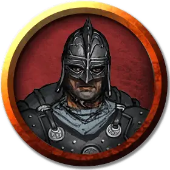

Послушник Воющей Ненависти
Howling Hatred Initiate
Средний Гуманоид (Человек), нейтрально-злой

Класс Доспеха 13 (кожанный)
Хиты 9 (2к8)
Скорость 30 футов
| мод | спас | ||
|---|---|---|---|
| СИЛ | 10 | +0 | +0 |
| ЛОВ | 15 | +2 | +2 |
| ТЕЛ | 10 | +0 | +0 |
| мод | спас | ||
|---|---|---|---|
| ИНТ | 10 | +0 | +0 |
| МДР | 9 | −1 | −1 |
| ХАР | 11 | +0 | +0 |
Навыки Обман +2, Религия +2, Скрытность +4
Чувства пассивное Восприятие 9
Языки Общий
Опасность 1/8 (25 опыта)
Бонус мастерства +2
Особенности
Попутный ветер (перезаряжается после короткого или длинного отдыха). Бонусным действием послушник получает преимущество при следующем своём броске дальнобойной атаки до конца своего следующего хода.
Задержка дыхания. Послушник может задерживать дыхание до 30 минут.
Действия
Кинжал. Рукопашная или дальнобойная атака оружием: +4 к попаданию, досягаемость 5 футов или дистанция 20/60 футов, одна цель. Попадание: колющий урон 4 (1к4 + 2).
Описание
Послушников Воющей Ненависти привлекает философия культа, проповедующая отказ от духовных привязанностей и материальных ценностей. При этом они не подозревают об истинной его природе. В лапы культа попадают все, кто разделяет подобные идеи: от мечтательных юношей, обладающих небольшим имуществом, до уставших от мира людей, жаждущих поклонения чему-то осязаемому и могущественному (например, силе стихий).
Послушники живут на одном воздухе в течение месяца, полагая, что такой режим избавит их от потребностей тела. На деле же из-за своей аскезы они впадают в ужасное истощение и потому становятся восприимчивыми к внушению. Вскоре они уже будут оправдывать гнусные поступки культа, повторяя заученные слова о том, что человеческая жертва — это не акт убийства, а освобождение души от ограничений физической оболочки, а вызов вихря для уничтожения еретиков — не террор, а демонстрация истинной веры.